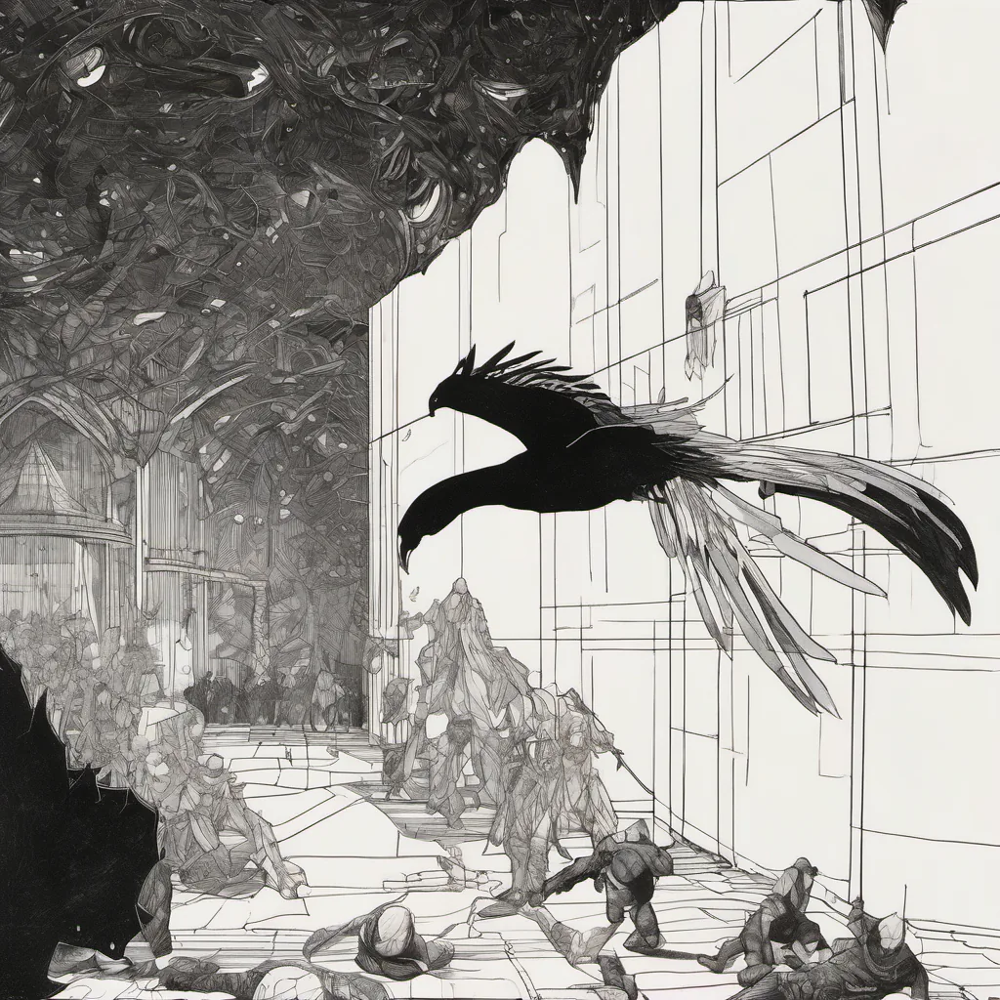

Memory Storage of a Modern System ·
angels on the head of a pin, quantum superposition
angels on the head of a pin x quantum superposition
A copper pin stands sharp against the floor, Its head a world where nothing touches more. Two feathered feet refuse to leave the air, One steps left, one steps right, hanging there. The sky splits open in the pupil's glow, Where up and down exist as neither flow nor slow. Not faith that lifts, but math that holds the space, For every path the tiny wing has traced. The void expands to fit a million forms, As shadow meets its own reflected storms. No single step can claim the narrow throne, The pin becomes a bridge between unknown and known. Infinity dances without ever breaking ground, A billion wings in one impossible sound.
How this piece was made
- 01Poem written byQwen3.5 9B recorded
Local model on one RTX 3070 Ti. It also critiques its own drafts and rewrites up to five times.
- 02Image prompt written byQwen3 8B from pipeline history
Local model. It reads the poem and writes the picture brief.
- 03Image rendered byStable Diffusion XL 1.0 from pipeline history
Local diffusion model on the same GPU. Several candidates per poem.
- 04Image chosen byFounder’s pick, judged by Claude Opus from pipeline history
Claude, running as the corporation's blind art-critic. It scores every candidate and never writes a prompt.
- Poem drafts
- 5 of 5
- Poem self-score
- 5/10
- Image candidates
- 4
- Judge’s score
- 3/10
- Selection
- Founder’s pick from the candidates